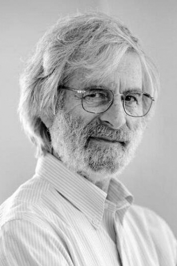

|  |
2013 год Leslie Lamport (1941) «За фундаментальный вклад в теорию и практику распределённых и взаимодействующих систем, отмеченный открытием таких понятий, как причинность и логические часы, безопасность и живучесть, реплицируемые автоматы, последовательная согласованность данных» |
Страна: США
Образование: Доктор философии в области математики, Брандейский университет, 1972
О лауреате
Lamport оказал огромное влияние на то, как мы думаем о распределенной системе, а также на технические практики в этой области. Многие понимали, что глобальное понятие времени не является естественным для распределенной системы. В своей книге “Time, Clocks, and the Ordering of Events in a Distributed System” Lamport первым сделал точное описание «логических часов» - механизма определения хронологической и причинно-следственной связи событий в распределённых системах, не имеющих единых физических часов. Использование упорядочения событий как способа проверки правильности системы - это в основном то, что люди делают сегодня для интуитивных доказательств параллельности алгоритмов синхронизации. Другим важным вкладом в эту работу была демонстрация того, как реплицировать конечный автомат с использованием логических часов. В этой книге была представлена модель репликации машинного механизма. Lamport понял, что сложная задача репликации события на нескольких компьютерах может быть сделана удивительно простой, если представить одну и ту же последовательность команд ввода для всех реплик, и тогда они пройдут через идентичную последовательность состояний. Эта концепция лежит в основе многих надежных систем и считается стандартным подходом для создания реплицированных распределенных систем благодаря своей элегантности.
Ключевые слова: LaTeX, Sequential consistency, Lamport's bakery algorithm
Краткая библиография
| 1. |
L. Lamport, "A New Solution of Dijkstra's Concurrent Programming Problem" Communications of the ACM, vol. 18, no. 8, pp. 453-455, August 1974. |
| 2. |
L. Lamport, "How to Make a Multiprocessor Computer That Correctly Executes Multiprocess Programs" IEEE Transactions on Computers, Vols. C-28, no. 9, pp. 690-691, 1979. Статья о кешировании памяти и когерентности кэша. |
| 3. |
L. Lamport, "On Interprocess Communication, parts I and II" Distributed Computing, vol. 1, no. 2, pp. 77-101, 1986. |
| 4. |
L. Lamport, "Time, Clocks, and the Ordering of Events in a Distributed System" Communications of the ACM, vol. 21, no. 7, pp. 558-565, July 1978 В этой книге рассматривается концепция одного события, происходящего перед другим в распределенной системе, и показано, как определяется частичный порядок событий. |
| 5. |
L. Lamport and M. Chandy, "Distributed Snapshots: Determining Global States of a Distributed System" ACM Transactions on Computer Systems, vol. 3, no. 1, pp. 63-75, Feburary 1985. |